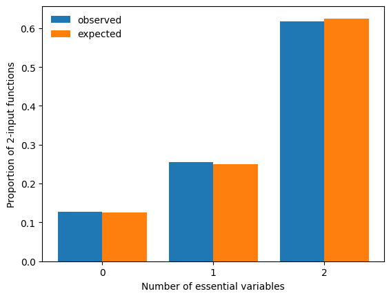
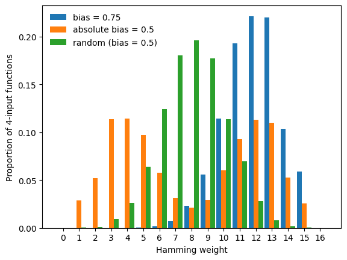
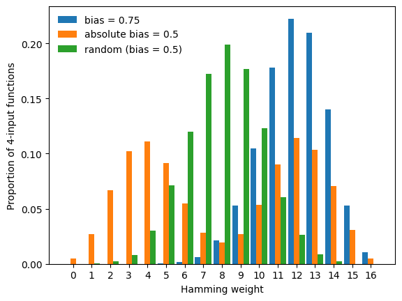

Random Boolean function generation
This tutorial focuses on the random generation of Boolean functions with prescribed properties, enabling large-scale computational studies.
Controlled random Boolean function generation enables:
Null model comparisons: Are biological regulatory rules special?
Ensemble studies: How do structural properties affect dynamical properties?
Theoretical predictions: Derive expected values for function properties
What you will learn
In this tutorial you will learn how to generate random Boolean functions with:
specified canalizing properties (depth, layer structure),
bias, absolute bias, or a specific Hamming weight,
linearity constraints,
degeneracy constraints.
It is strongly recommended to complete the previous tutorials first.
Setup
[1]:
import boolforge as bf
import numpy as np
import matplotlib.pyplot as plt
Generating random Boolean functions
The function boolforge.random_function(n, *args) generates a random \(n\)-input Boolean function subject to optional constraints. By default, it generates a non-degenerate function, meaning that all variables are essential.
[2]:
n = 3
f = bf.random_function(n)
bf.display_truth_table(f, labels="f_random_non_degenerate")
print("Is f degenerate?", f.is_degenerate())
print("Activities of f:", f.get_activities(exact=True))
print("Edge effectiveness of f:", f.get_edge_effectiveness())
x0 x1 x2 | f_random_non_degenerate
-------------------------------------------------------
0 0 0 | 1
0 0 1 | 0
0 1 0 | 1
0 1 1 | 0
1 0 0 | 1
1 0 1 | 1
1 1 0 | 0
1 1 1 | 1
Is f degenerate? False
Activities of f: [0.75 0.25 0.75]
Edge effectiveness of f: [0.875, 0.375, 0.875]
The rest of this tutorial describes the various constraints. Each constraint defines a specific family of n-input Boolean functions, from which boolforge.random_function(n,*args) samples uniformly at random. That is, each function satisfying a given set of constraints is selected with equal probability.
Parity functions
Setting parity=True generates parity functions, also known as non-degenerate linear functions.
[3]:
f = bf.random_function(n, parity=True)
bf.display_truth_table(f, labels="f_linear")
print("Activities:", f.get_activities(exact=True))
print("Edge effectiveness:", f.get_edge_effectiveness())
print("Normalized average sensitivity:", f.get_average_sensitivity(exact=True))
print("Canalizing strength:", f.get_canalizing_strength())
x0 x1 x2 | f_linear
----------------------------------------
0 0 0 | 0
0 0 1 | 1
0 1 0 | 1
0 1 1 | 0
1 0 0 | 1
1 0 1 | 0
1 1 0 | 0
1 1 1 | 1
Activities: [1. 1. 1.]
Edge effectiveness: [1.0, 1.0, 1.0]
Normalized average sensitivity: 1.0
Canalizing strength: 0.0
Parity functions are the only Boolean functions with activity 1 (for all variables), normalized average sensitivity 1 and canalizing strength 0.
Functions with prescribed canalizing properties
If parity=False (default), canalizing properties can be specified via layer_structure and depth.
Functions with prescribed canalizing layer structure
The canalizing layer structure can be specified via layer_structure. This vector describes the number of conditionally canalizing variables in each layer of the randomly generated function.
If the optional argument
exact_depth=True(default is False), thenlayer_structuredescribes the exact layer structure, i.e., the core function cannot be canalizing.If
exact_depth=False(the default), it is possible that the core function is canalizing (meaning that the last described layer inlayer_structuremay contain more conditionally canalizing variables, or that there are additional canalizing layers).
Before generating any random function, random_function() goes through a number of checks ensuring that the provided optional arguments make sense. For example, it checks that the provided layer structure \((k_1,\ldots,k_r)\) satisfies
\(k_i\geq 1\),
\(k_1 + \cdots + k_r \leq n\), and
if \(k_1 + \cdots + k_r = n\), then \(k_r \geq 2\) because the last layer of a nested canalizing function must always contain two or more variables.
[4]:
f = bf.random_function(n, layer_structure=[1])
g = bf.random_function(n, layer_structure=[1], exact_depth=True)
h = bf.random_function(n, layer_structure=[3])
k = bf.random_function(n, layer_structure=[1, 2])
labels = ["f", "g", "h", "k"]
bf.display_truth_table(f, g, h, k, labels=labels)
for func, label in zip([f, g, h, k], labels):
info = func.get_layer_structure()
print(f"Canalizing depth of {label}: {func.get_canalizing_depth()}")
print(f"Layer structure of {label}: {info['LayerStructure']}")
print(f"Number of layers of {label}: {info['NumberOfLayers']}")
print(f"Core function of {label}: {info['CoreFunction']}")
print()
x0 x1 x2 | f g h k
---------------------------------------------------------
0 0 0 | 0 1 1 0
0 0 1 | 1 1 0 0
0 1 0 | 0 1 0 0
0 1 1 | 0 1 0 1
1 0 0 | 1 0 0 0
1 0 1 | 1 1 0 1
1 1 0 | 1 1 0 0
1 1 1 | 1 0 0 1
Canalizing depth of f: 3
Layer structure of f: [1, 2]
Number of layers of f: 2
Core function of f: [1]
Canalizing depth of g: 1
Layer structure of g: [1]
Number of layers of g: 1
Core function of g: [0 1 1 0]
Canalizing depth of h: 3
Layer structure of h: [3]
Number of layers of h: 1
Core function of h: [1]
Canalizing depth of k: 3
Layer structure of k: [1, 2]
Number of layers of k: 2
Core function of k: [0]
Repeated evaluation of this block of code shows that the canalizing depth of f is either 1 or 3 (note that a canalizing depth of \(n-1\) is never possible for a non-degenerate function). On the contrary, the canalizing depth of g is always 1 because we set exact_depth=True. The 2-input core function of g is one of the two parity functions, each with 50% probability. Likewise, the core function for the other functions is simply [0] or [1], each with 50% probability. Functions
h and k are nested canalizing, i.e., their canalizing depth is 3. Their layer structure is exactly as specified.
Functions with prescribed canalizing depth
If we do not care about the specific layer structure but only about the canalizing depth, we specify the optional argument depth instead of layer_structure.
[5]:
# any function has at least canalizing depth 0 so this is the same as boolforge.random_function(n)
f = bf.random_function(n,depth=0)
# a random non-canalizing function
g = bf.random_function(n,depth=0,exact_depth=True)
# a random canalizing function
h = bf.random_function(n,depth=1)
# a random nested canalizing function
k = bf.random_function(n,depth=n)
labels = ["f", "g", "h", "k"]
bf.display_truth_table(f, g, h, k, labels=labels)
for func, label in zip([f, g, h, k], labels):
print(f"Canalizing depth of {label}: {func.get_canalizing_depth()}")
print()
x0 x1 x2 | f g h k
---------------------------------------------------------
0 0 0 | 1 1 1 0
0 0 1 | 1 1 1 0
0 1 0 | 0 1 1 1
0 1 1 | 1 0 0 0
1 0 0 | 1 0 1 0
1 0 1 | 1 1 0 0
1 1 0 | 0 1 1 1
1 1 1 | 0 1 1 1
Canalizing depth of f: 3
Canalizing depth of g: 0
Canalizing depth of h: 1
Canalizing depth of k: 3
Repeated evaluation of this block of code shows that the canalizing depth of f can be 0, 1, or 3. Note that specifying depth=0 without exact_depth=True does not restrict the space of functions at all. On the contrary, the canalizing depth of g is always 0 (i.e., g does not contain any canalizing variables) because we set exact_depth=True. Function h is canalizing and may be nested canalizing (because we specified that the minimal canalizing depth is 1), and k is
always nested canalizing (i.e., it has canalizing depth \(n=3\)).
We remember: If exact_depth=True, depth is interpreted as exact canalizing depth. Otherwise (default), depth is interpreted as minimal canalizing depth. For example,
depth=1: “At least 1-canalizing” (could be 2,3,…,n-canalizing)depth=1, exact_depth=True: “Exactly 1-canalizing” (not 2,3,…,n-canalizing)
Allowing degenerate functions
It is possible that an n-input Boolean function does not depend on all its variables. For example, the function \(f(x,y) = x\) depends on \(x\) but not on \(y\). By default, such degenerate functions are never generated by ``boolforge.random_function()``. To enable the generation of possibly degenerate functions, we set allow_degenerate_functions=True. Although hardly of any practical value, we can even restrict the random generation to degenerate functions only, using
boolforge.generate.random_degenerate_function(n,*args).
Note: When generating random canalizing functions, the value of allow_degenerate_functions is ignored. The non-canalizing core function is constructed to depend on all of its variables so that the number of essential variables equals the specified value. Otherwise degeneracy would reduce the number of essential variables and confound analyses of random Boolean networks, especially when the degree is small.
Since degenerate functions occur much more frequently at low degree, we set n=2, generate a large number of random, possibly degenerate functions and compare a histogram of the observed number of essential variables to the expected proportions.
[6]:
n = 2
n_simulations = 10000
count_essential = np.zeros(n + 1, dtype=int)
for _ in range(n_simulations):
f = bf.random_function(n, allow_degenerate_functions=True)
count_essential[f.get_number_of_essential_variables()] += 1
expected = np.array([2 / 16, 4 / 16, 10 / 16])
x = np.arange(n + 1)
width = 0.4
fig, ax = plt.subplots()
ax.bar(x - width / 2, count_essential / n_simulations, width=width, label="observed")
ax.bar(x + width / 2, expected, width=width, label="expected")
ax.legend(frameon=False)
ax.set_xticks(x)
ax.set_xlabel("Number of essential variables")
ax.set_ylabel(f"Proportion of {n}-input functions")
print("Error:", count_essential / n_simulations - expected)
plt.show()
Error: [ 0.0022 0.006 -0.0082]

Functions with prescribed Hamming weight
The Hamming weight of a Boolean function is the number of ones in its truth table. BoolForge allows for the generation of random n-input functions with a specific Hamming weight \(w\in\{0,1,\ldots,2^n\}\). The additional optional parameters allow_degenerate_functions and exact_depth specify whether degenerate and canalizing functions are allowed. By default, canalizing functions are allowed, while degenerate functions are not. Since all functions with Hamming weight
\(w\in\{0,1,2^n-1,2^n\}\) are canalizing, we require \(2\leq w\leq 2^n-2\) whenever canalizing functions are not permissible (i.e., whenever exact_depth=True).
[7]:
n = 3
f = bf.random_function(n, hamming_weight=5)
g = bf.random_function(n, hamming_weight=5, exact_depth=True)
h = bf.random_function(n, hamming_weight=2, allow_degenerate_functions=True)
labels = ["f", "g", "h"]
bf.display_truth_table(f, g, h, labels=labels)
for func, label in zip([f, g, h], labels):
print(f"Hamming weight of {label}: {func.hamming_weight}")
print(f"Canalizing depth of {label}: {func.get_canalizing_depth()}")
print(f"Number of essential variables of {label}: {func.get_number_of_essential_variables()}")
print()
x0 x1 x2 | f g h
-------------------------------------------------
0 0 0 | 1 1 0
0 0 1 | 1 1 1
0 1 0 | 0 0 0
0 1 1 | 0 0 0
1 0 0 | 1 0 0
1 0 1 | 0 1 1
1 1 0 | 1 1 0
1 1 1 | 1 1 0
Hamming weight of f: 5
Canalizing depth of f: 0
Number of essential variables of f: 3
Hamming weight of g: 5
Canalizing depth of g: 0
Number of essential variables of g: 3
Hamming weight of h: 2
Canalizing depth of h: 2
Number of essential variables of h: 2
Biased and absolutely biased functions
While specifying the Hamming weight fixes the exact number of 1s in the truth table of a generated function, specifying the bias or absolute bias acts slightly differently. The bias \(p\) describes the probability of selecting a 1 at any position in the truth table and can be modified using the optional argument bias. Instead of specifying the bias, the absolute bias may also be specified. Unbiased functions contain an equal number of ones and zeros in their truth table and have an
absolute bias of \(0\), the default. If, for example, we set absolute_bias=0.5 and specify to use absolute bias (use_absolute_bias=True, default is False), the bias used to generate the function is either 0.25 or 0.75, both with probability 50%. Generally, if we set use_absolute_bias=True; absolute_bias=a for \(a\in [0,1]\), the bias is either \((1+a)/2\) or \((1-a)/2\), both with probability 50%.
To display these different modes, we repeatedly generate random Boolean functions under three different constraints (f with bias \(p=0.75\), g with absolute bias 0.5, and h an unbiased function, i.e., with bias \(p=0.5\)), and compare the empirical Hamming weight distribution of the three families of functions.
[8]:
n = 4
n_simulations = 10000
counts = np.zeros((3, 2**n + 1), dtype=int)
for _ in range(n_simulations):
f = bf.random_function(n, bias=0.75)
g = bf.random_function(n, absolute_bias=0.5, use_absolute_bias=True)
h = bf.random_function(n, absolute_bias=0.5) #absolute_bias ignored!
counts[0, f.hamming_weight] += 1
counts[1, g.hamming_weight] += 1
counts[2, h.hamming_weight] += 1
labels = ["bias = 0.75", "absolute bias = 0.5", "random (bias = 0.5)"]
x = np.arange(2**n + 1)
width = 0.3
fig, ax = plt.subplots()
for i in range(3):
ax.bar(x - width + i * width, counts[i] / n_simulations, width=width, label=labels[i])
ax.legend(frameon=False)
ax.set_xticks(x)
ax.set_xlabel("Hamming weight")
ax.set_ylabel(f"Proportion of {n}-input functions")
plt.show()

This plot exemplifies the difference between bias and absolute bias:
Specifying the bias shifts the mode of the Hamming weight distribution to the value of
bias.Specifying the absolute bias yields random functions with a bimodal Hamming weight distribution.
Note that absolute_bias=0.5 is ignored in the generation of h. If the value of absolute_bias should be used, this must be specified via use_absolute_bias=True. By default, the value of bias (default 0.5) is used.
In the above plot, we notice a lack of functions with Hamming weight 0 and \(16=2^n\). These constant functions are degenerate and thus not generated unless we set allow_degenerate_functions=True, which as we see below, slightly modifies the resulting Hamming weight distributions.
[9]:
counts[:] = 0
for _ in range(n_simulations):
f = bf.random_function(
n, bias=0.75, allow_degenerate_functions=True
)
g = bf.random_function(
n, absolute_bias=0.5, use_absolute_bias=True, allow_degenerate_functions=True
)
h = bf.random_function(
n, allow_degenerate_functions=True
)
counts[0, f.hamming_weight] += 1
counts[1, g.hamming_weight] += 1
counts[2, h.hamming_weight] += 1
fig, ax = plt.subplots()
for i in range(3):
ax.bar(x - width + i * width, counts[i] / n_simulations, width=width, label=labels[i])
ax.legend(frameon=False)
ax.set_xticks(x)
ax.set_xlabel("Hamming weight")
ax.set_ylabel(f"Proportion of {n}-input functions")
plt.show()

Summary
This tutorial demonstrated how BoolForge enables uniform random generation of Boolean functions under flexible constraints. Different constraints define fundamentally different ensembles, and being explicit about these choices is essential for a correct generation and interpretation of computational results.
Next steps: The next tutorial exemplifies how these function-level ensembles can be used to uncover new insights into biological regulatory networks, as well as the relationship between network structure and dynamics.
Common pitfalls
absolute_biashas no effect unlessuse_absolute_bias=True.depth=0withoutexact_depth=Truedoes not restrict the function space since any Boolean function is at least 0-canalizing.Constant functions and other degenerate functions that do not depend on all inputs are only generated if
allow_degenerate_functions=True. Iflayer_structureordepth>0are provided, canalizing functions are generated, which always depend on all inputs. That is, in these cases a possible parameter choice ofallow_degenerate_functions=Trueis ignored.For larger \(n\) (e.g., \(n>5\)), set
allow_degenerate_functions=Trueto avoid expensive degeneracy tests. Almost all functions in many variables are non-degenerate.